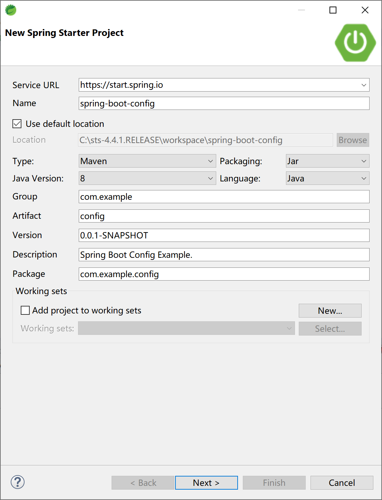
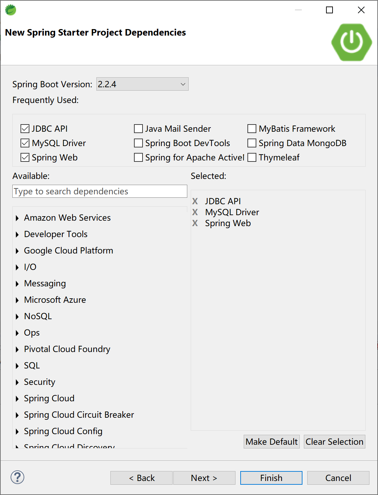
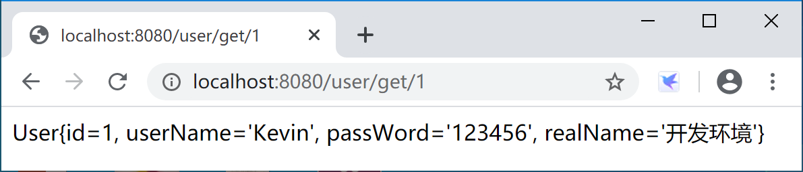
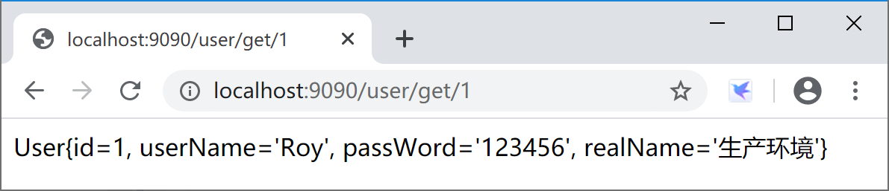
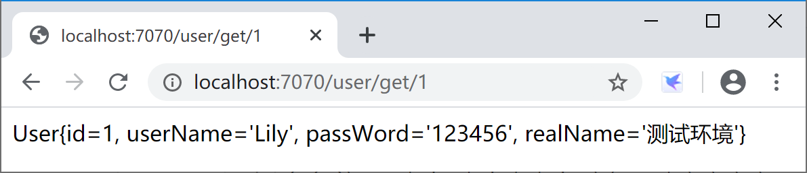

15.1 使用多环境配置
Spring Boot 是通过概要文件（profile）机制对多环境配置提供支持的。
典型的用法是，通过在resources目录下提供多个application-xxx.properties文件，然后再application.properties中设置spring.profiles.active=xxx之类的配置或在运行时提供--spring.profiles.active=xxx参数来激活某个概要文件。
还有一种不常用的方法是通过在启动类中设置激活的概要文件。
@SpringBootApplication
public class SpringBootConfigApplication {
public static void main(String[] args) {
SpringApplicationBuilder builder = new SpringApplicationBuilder(SpringBootConfigApplication.class);
builder.application().setAdditionalProfiles("dev");
builder.run(args);
}
}
创建一个Spring Boot 应用。

选择支持数据库的Web应用启动器依赖。

提供4个配置文件application.properties、application-dev.properties、application-prod.properties和application-test.properties，
开发环境概要文件application-dev.properties内容如下：
server.port=8080
spring.datasource.url=jdbc:mysql://localhost:3306/ssdev?useUnicode=true&characterEncoding=utf-8&serverTimezone=GMT%2B8
spring.datasource.username=root
spring.datasource.password=123456
spring.datasource.driver-class-name=com.mysql.cj.jdbc.Driver
测试环境概要文件application-test.properties内容如下：
server.port=7070
spring.datasource.url=jdbc:mysql://localhost:3306/sstest?useUnicode=true&characterEncoding=utf-8&serverTimezone=GMT%2B8
spring.datasource.username=root
spring.datasource.password=123456
spring.datasource.driver-class-name=com.mysql.cj.jdbc.Driver
生产环境概要文件application-prod.properties内容如下：
server.port=9090
spring.datasource.url=jdbc:mysql://localhost:3306/ssprod?useUnicode=true&characterEncoding=utf-8&serverTimezone=GMT%2B8
spring.datasource.username=root
spring.datasource.password=123456
spring.datasource.driver-class-name=com.mysql.cj.jdbc.Driver
项目配置文件application.properties中设置激活的概要文件，其内容如下：
spring.profiles.active=dev
添加entiy、dao、service和controller类，以便测试配置文件是否生效。数据库结构和代码复用“5.1 Spring Boot集成JdbcTemplate”小节的对应代码。
数据库表结构DDL语句：
DROP TABLE IF EXISTS `user`;
CREATE TABLE `user` (
`id` int(32) NOT NULL AUTO_INCREMENT,
`userName` varchar(32) NOT NULL,
`passWord` varchar(50) NOT NULL,
`realName` varchar(32) DEFAULT NULL,
PRIMARY KEY (`id`)
) ENGINE=InnoDB AUTO_INCREMENT=2 DEFAULT CHARSET=utf8;
实体User类：
public class User {
private Integer id;
private String userName;
private String passWord;
private String realName;
//...setter & getter
@Override
public String toString() {
return "User{" +
"id=" + id +
", userName='" + userName + '\'' +
", passWord='" + passWord + '\'' +
", realName='" + realName + '\'' +
'}';
}
}
数据访问UserDAO类：
@Repository
public class UserDAO {
@Autowired
JdbcTemplate jdbcTemplate;
public User getUser(int id) {
String sql = "select * from user where id=" + id;
return jdbcTemplate.queryForObject(sql, new BeanPropertyRowMapper<>(User.class));
}
}
服务UserService类：
@Service
public class UserService {
@Autowired
UserDAO userDAO;
public User getUser(int id) {
return userDAO.getUser(id);
}
}
控制器UserController类：
@RestController
@RequestMapping("/user")
public class UserController {
@Autowired
private UserService userService;
@RequestMapping("get/{id}")
public String getUser(@PathVariable int id) {
return userService.getUser(id).toString();
}
}
清空配置文件application.properties内容，使用启动类中的代码配置方式激活“dev”概要文件，应用程序在8080端口提供服务，在浏览器中访问测试，情况如下：

在配置文件application.properties中添加“spring.profiles.active=prod”激活生产环境概要文件，应用程序在9090端口提供服务，在浏览器中访问测试，情况如下：

应用打包后，在项目的“spring-boot-config\target”下，通过启动参数java -jar config-0.0.1-SNAPSHOT.jar --spring.profiles.active=test激活测试环境概要文件。
java -jar config-0.0.1-SNAPSHOT.jar --spring.profiles.active=test
. ____ _ __ _ _
/\\ / ___'_ __ _ _(_)_ __ __ _ \ \ \ \
( ( )\___ | '_ | '_| | '_ \/ _` | \ \ \ \
\\/ ___)| |_)| | | | | || (_| | ) ) ) )
' |____| .__|_| |_|_| |_\__, | / / / /
=========|_|==============|___/=/_/_/_/
:: Spring Boot :: (v2.2.4.RELEASE)
...
2020-01-31 10:40:31.269 INFO 12344 --- [ main] o.s.b.w.embedded.tomcat.TomcatWebServer : Tomcat started on port(s): 7070 (http) with context path ''
2020-01-31 10:40:31.275 INFO 12344 --- [ main] c.e.config.SpringBootConfigApplication : Started SpringBootConfigApplication in 3.369 seconds (JVM running for 4.134)
应用程序在测试环境的7070端口提供服务，在浏览器中访问测试，情况如下：

通过上述示例，我们可以知道如何配置概要文件，和如何激活概要文件。也验证了概要文件的激活优先顺序：
- 启动命令行参数
--spring.profiles.active=test最优先； - 配置配置文件application.properties中
spring.profiles.active=prod的设置次之； - 启动类种
SpringApplicationBuilder.application().setAdditionalProfiles("dev")优先级最低。
这也是符合开发运维的通行做法：命令优先于配置，配置优先于代码。这样的原则或做法，在 Spring 体系内大量存在，广泛使用。
本小节示例项目代码：
https://github.com/gyzhang/SpringBootCourseCode/tree/master/spring-boot-config